How not to get lost while hiking: practical guide for the use of GPX files
After many requests for this tutorial (well, only from my sister and a friend), I put together this brief step-by-step guide on how to use gpx files for trail tracking using the GPS on your phone. In other words, how to try not to get lost while out on a trail.
For some context, GPX stands for GPS Exchange Format and its a text-based file (.gpx) that stores geographic data like waypoints and routes. This allows users to track their position while hiking, cycling, or running making it easier to follow pre-defined paths on various devices.
Where can you get .gpx files?
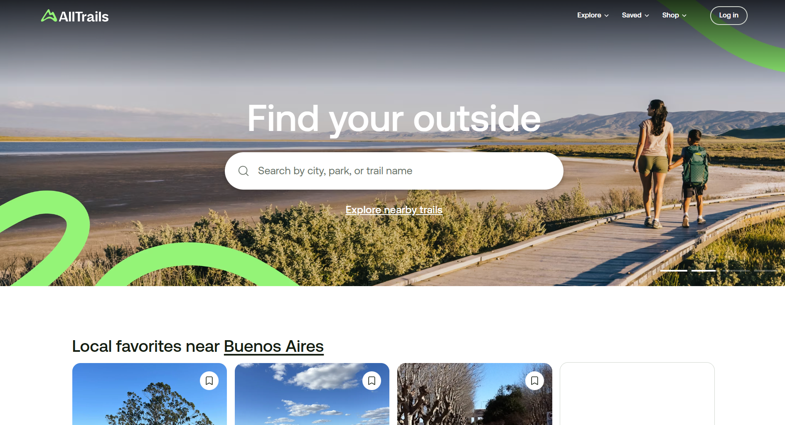AllTrails
I find most of my .gpx files in alltrails.com. It's one of the most popular sources and contains most trails. You have to create a user to be able to download the .gpx files. It has paid plans but the free tier has everything I need from it. In this guide, I will focus on the use of alltrails, given as it may not be the most user-friendly.
Other sources for .gpx files
In the past, I have also used some other more specific sites for certain destinations like this one for Scottish trails and this other one for trails in the UK in general.
There are also many blogs from sports enthusiasts that contain the files showing the trail they followed on their own adventures.
How do you use .gpx files?
This type of files need to be opened by an app that can read and interpret them correctly. I have an Android phone and use GPX Viewer that has a free version with enough features to be functional for my use.
Step-by-step guide
-
Navigate to AllTrails

-
Click on Log in. If you have an account, input your credentials and complete log in. If you do not have an account yet, click on Sign up for free and complete the sign up process for a free account. It is not necessary to subscribe for a paid plan.
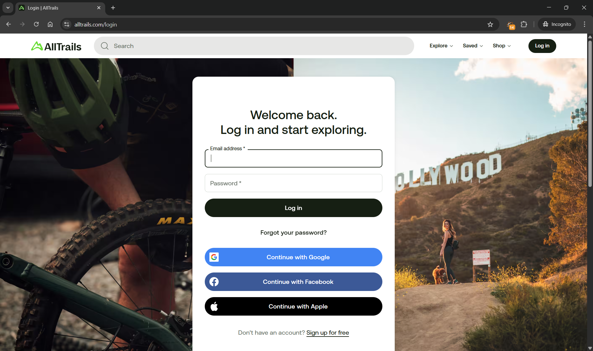 -
Once you have logged in, use the search bar to look for the specific trail or general area you want to hike in. If you have a specific trail in mind, click on the trail directly.
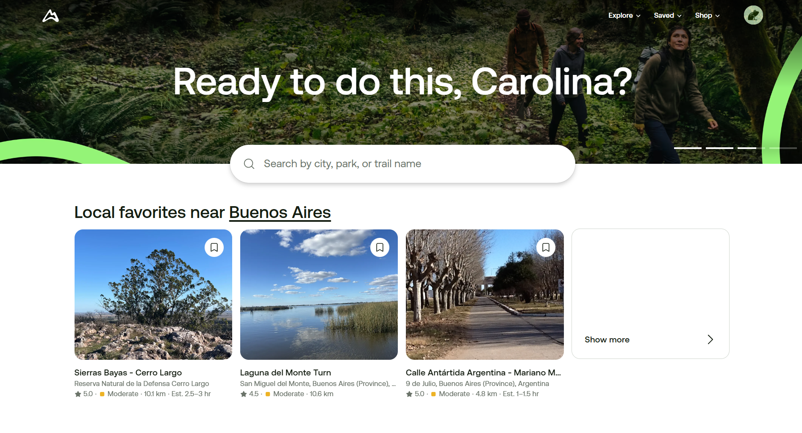 -
If you are want to explore possible trails in an area, you can search for the area or point of interest on the Search bar. For example: Loch Lomond.
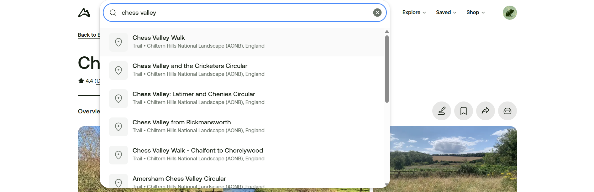 -
From the area profile, you will be able to browse through the available options in the area in a list or directly in the map. If you hover over a certain pin, the route will be displayed in bright green on the map along with the name of the trail.
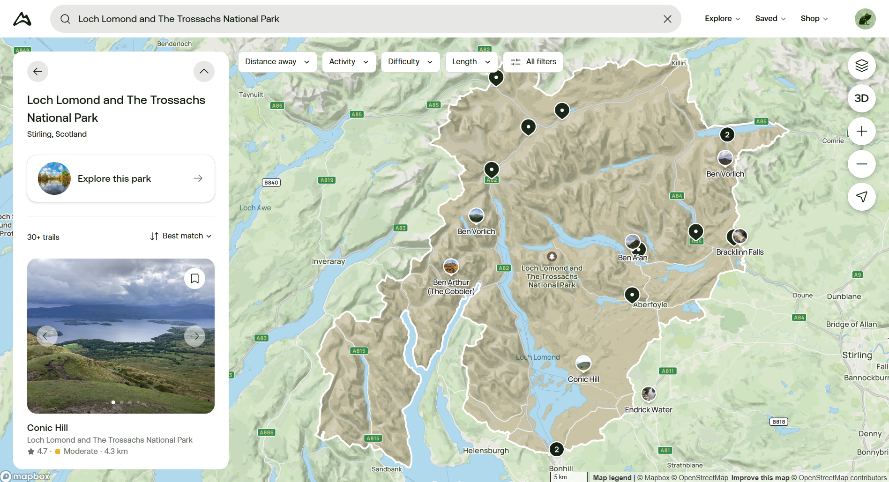 -
If the black pin has a number on it, the number indicates the amount of trails that the pin is representing. If you click on the pin, you can scroll to the right to see the trails included.

-
Click on the desired trail.
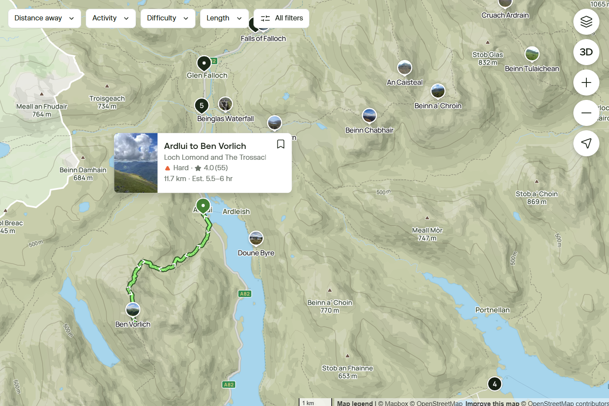 -
Within the trail's profile, you can:
- read an overview description of the trail
- review the route by clicking the map rectangle
- see photos uploaded by other users
- check reviews and comments for the trail. This can be particularly seful to check for updated trail conditions (e.g.: if its muddy or in bad shape).
- find nearby trails
-
On the map view of the trail, you can check on the specific route the gpx will guide you through and the elevation along the way as well. It can be useful as well to use this feature to look for the closest train station, if it's not specified in the trail description.

-
Once you decided that this is the trail you want to use, click Hit the trail on the main screen.
-
Among the options displayed, click on Export map file.
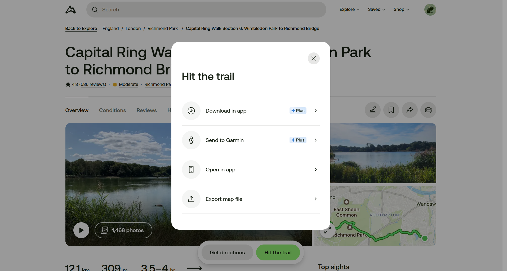 -
On the dropdown menu, select GPX Track and click on Export.
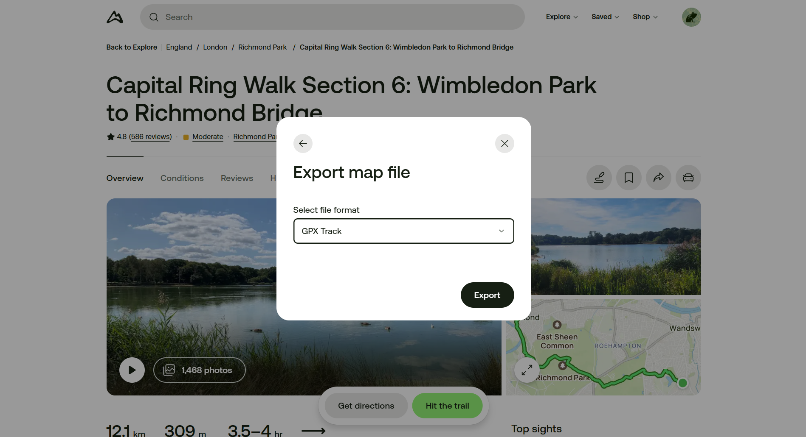 -
This will download a .gpx file to your computer or phone. Send the file to the phone you will use to navigate the trail with.
-
Once you have the .gpx file on the desired device, open it with an app that can read this type of files. As mentioned above, the one I use is called GPX Viewer, only available on Android. When you open the .gpx with the app, it shows the whole trail, superimposed on the Google Maps map.
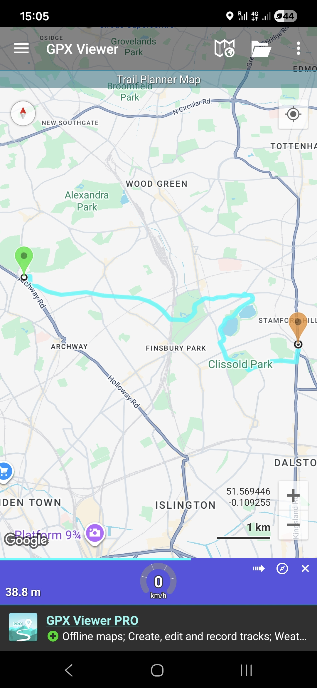 -
When you tap the light blue trail, the profile of the trail is shown, where the elevation of the walk is clearly displayed.
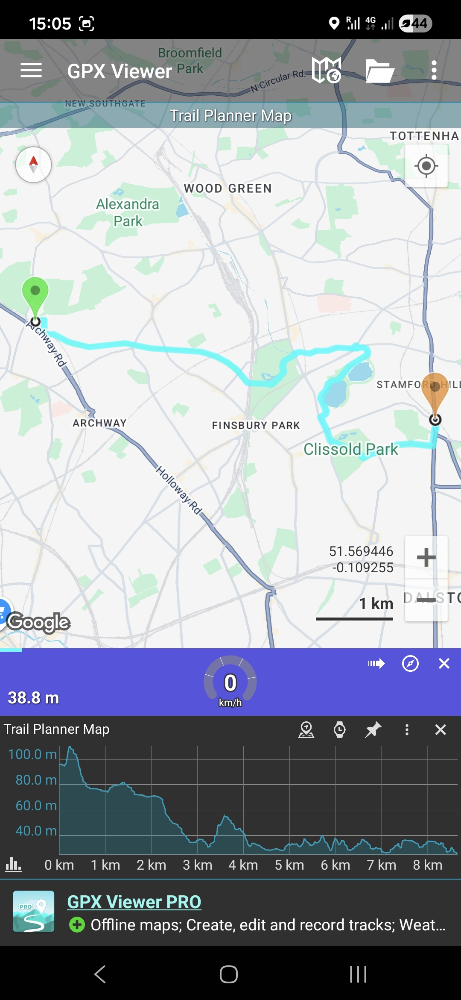 -
You can zoom in to the trail and see specific sections in more detail and follow you location in relation with the trail.
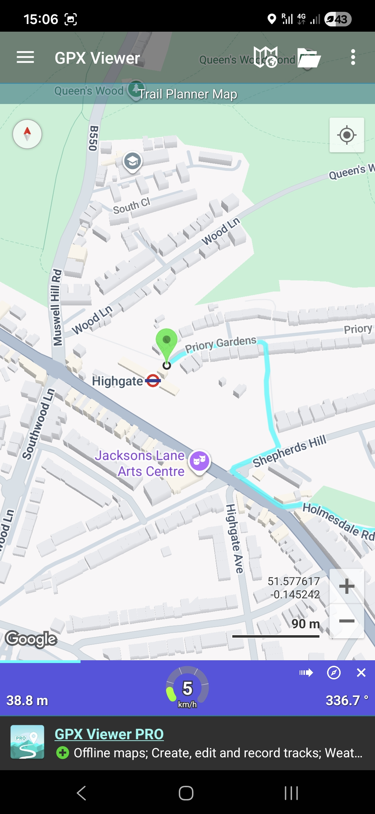
Once you have the .gpx file loaded and ready to go, you do not need to have phone signal or mobile data available for the navigation to work, because it relies on the phone's GPS signal. This makes it ideal for remote places where signal is spotty. I also love to be able to track how much I have walked, elevation-wise. There's nothing more gratifying that realizing you have finished the ascent part of a trail and its only downhill from there. Happy hiking!